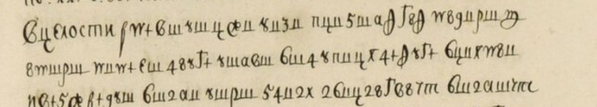

Cipher Letters › Astrakhan, State Archive of Astrakhan Oblast › 1737
Watch the Shah and the Turks: Ostermann to Kalushkin, resident in Persia, 17 April 1737
A rescript sent in the Empress's name to Russia's resident at the Persian court, twenty lines of it in a cipher of Cyrillic letters and figures. The key was recovered here from the ciphertext alone. Mark Vladimir Prizmic had solved it first, ten days earlier; we did not know, so ours is an independent second solution.
- Letter
- Rescript of 17 April 1737 (Old Style; 28 April New Style), in the Empress's voice ("по указу нашему", by our order), naming "our vice-chancellor"
- From / to
- A. I. Ostermann, vice-chancellor, St Petersburg, in the Empress's name → I. P. Kalushkin, Russian resident in Persia
- Held at
- State Archive of Astrakhan Oblast (GKUAO GAAO), f. 394, op. 1 dop., d. 11, l. 21. Image on Wikimedia Commons, from the archive's virtual exhibition
- Cipher
- One sign for each Russian letter: 31 letter signs (Cyrillic letters, digits and marks with other values), a divider and a line-end flourish. 20 cipher lines, 770 letter signs
- Read
- All 20 cipher lines, as far as the leaf goes: 140 of 152 words read as sense (92.1%), every slip and supplied letter counted as unread
- Record
- Cyphersolver, targets/ostermann1737 (catalogue 1247, PR #935, merged 24 Nov 2026). The maintainers' own write-up is still to come: the folder is marked "in progress, not written up".


Decoded
иного нена ходитца толко подтворждаютца прежние
указы / ачто после того здесь спорсицкимъ посломъ
What is new and what was known
Before any transcription the contributor searched the Cyphersolver issues and repository, the DECODE database, the Commons file page, and the web in Russian and English. No key, decipherment, gloss or printed reading of this leaf was found in those places. Zenodo was not searched, and that was a mistake (below). Two phrases of the reading, searched after the decode, gave no hit.
Not checked: the Astrakhan archive's exhibition page and its caption (unreachable), Soboleva's histories of Russian cipher work at page level, and the Foreign Affairs archive (AVPRI f. 77), where the Collegium's clear draft of this rescript should be. A finding aid in St Petersburg lists rescripts to Kalushkin of 1739 with their decipherments: other documents, two years later, not seen. Not finding a reading is not proof that none exists.
First solved by Mark Vladimir Prizmic, who published his key and reading on Zenodo on 14 November 2026 (https://doi.org/10.5281/zenodo.24234135), ten days before this work. Our search did not cover Zenodo, and his paper was not seen before or during our work, so the two solutions are independent. Compared sign by sign on 27 November 2026, the two keys give the same value for 29 of our 31 letter signs, and the readings say the same thing. Credit for the first solution is his.
What this work adds: an independent second recovery of the key from the cipher itself; one frozen decode of all twenty cipher lines; a Russian reading with every hole marked; and an English translation. Cyphersolver's catalogue entry 1247, listed from its Wikisource and Commons sweep of October 2026, was corrected to twenty cipher lines (it had said about seventeen).
The letter
One leaf. A clear heading, "Ukaz nashemu rezidentu Kalushkinu" (decree to our resident Kalushkin), and a clear opening that acknowledges an earlier rescript and his reports. Then twenty lines in cipher. Line 20 breaks off in mid-sentence; the text goes on to the next leaf of the file, which is not imaged.
The Commons description names the writer as Vice-Chancellor Ostermann. The rescript itself speaks in the Empress's voice and calls him "our vice-chancellor". names and setting not checked against a history
What it says
Russian as read, in the decode's own spelling; English from the translation in the repository (by Claude, not checked by a reader of Russian). (?) = word with one wrong letter, counted unread; [..] = letter supplied, not in the cipher.
Nothing new is resolved: the former decrees stand. The protocols of the conferences held with the Persian ambassador are enclosed, for Kalushkin to act on if need be.
The ambassador had asked the vice-chancellor more than once to write to the Shah himself. No need was seen, but to please him the vice-chancellor did so, by the Empress's order, and a copy is enclosed. Kalushkin is to forward the letter "in a fitting manner", and to keep watch:
"а в протчемъ бденно смотреть и прилежно разведыъа[ть], что между шаха и турокъ происходи[т]ъ""and for the rest to watch vigilantly and diligently find out what is going on between the Shah and the Turks"
He is to learn how, and with what, the Shah's ambassador Abdul Baki Khan has returned from Constantinople, a Turkish ambassador having gone to the Shah with him. The leaf ends on what Kalushkin is to do about that Turkish ambassador: "тебе всячески" (you, in every way …).
The cipher
A simple substitution: one sign for one Russian letter. The signs are borrowed shapes given new values: the Cyrillic В stands for к, ш for о, the digit 8 for и, 4 for д, the cross + for а. A ligature sign stands for "от". A long slanted stroke divides words or phrases, and a flourish ends some lines. No order was found in the table.
The key does not tell ѣ from е, or і from и. Two signs (ф and щ) rest on one use each in the lines the key was built from.
How it was read
- 24 Nov 2026, before anything else. The prior-art search above, written down.
- Transcription. One Claude Fable 5.2 session copied the signs by shape from enlarged crops of each line of the Commons image, with no key (none existed). Seven signs were marked doubtful and one blot left unread. The transcription was frozen (fingerprinted) at 10:46 UTC.
- A held-out test, set in advance. Lines 1-16 (622 letters) were used to find the key. Lines 17-20 (148 letters) were held back. They had been seen as images while copying, but not decoded.
- The key from lines 1-16 alone. A solver (simulated annealing) scored candidate keys against a Russian language model the solver built from 160 Wikisource pages of documents of 1700-1749, mostly decrees. All eight runs gave the same key. One value was set by hand and is disclosed: the ligature sign as "от", from its two uses in the training lines ("онъ от себя", "отправить").
- Frozen, then decoded once. The key was frozen at 10:55 UTC and all twenty lines decoded in one pass. Nothing was emended: that pass is the figure of record.
- Judged by a separate session. A Claude Opus 5.5 session saw only the decoded letters and scored each one: sense, a one-letter slip, or no sense.
- Time-stamped. A fingerprint list of the working folder was stamped by two outside time-stamp services at 11:01 UTC.
Checks
- Held-out lines: 147 of the 148 letters of lines 17-20 decode to sense on the first pass (99.3%).
- Shuffled keys: 0 of 5,000 shuffled keys score as well as the real key, at each of two seeds, on the whole text, the training lines and the held-out lines alike.
- The project's check (PR #935, 24 Nov 2026), by a model session for the maintainers, not a person: a decoder written afresh gives the decode on 20 of 20 lines; the judge's figures and the word count were re-added and agree; the fingerprints and both time-stamp tokens match. The Russian was read as sentences, "coherent chancery Russian from end to end", and the maintainers recorded their own reading review (grade B) in place of the one signed by the contributor's session. Four places were compared with the image and agree.
- What the check could not confirm: the order of events rests on the contributor's record, because everything came in one commit. The repository's statistical validation could not run, as Cyphersolver has no Russian language model, and the shuffle control was not re-run there, because the solver's corpus pages were not sent.
How much is read?
| Read as sense | |
|---|---|
| Words, by the read bar (slips and supplied letters as holes) | 140 of 152 = 92.1% |
| Words, if the one-letter slips were counted as read | 149 of 152 = 98.0% |
| Letters, strict judge: lines 1-16 | 613 of 622 = 98.6% |
| Letters, strict judge: held-out lines 17-20 | 147 of 148 = 99.3% |
| Letters, strict judge: all 20 lines | 760 of 770 = 98.7% |
The figure of record is 140 of 152 words. The twelve holes are nine words with a one-letter slip and three words with a letter supplied (писа[л], разведыъа[ть], происходи[т]ъ). The key is a rebuilt one, so the slips count as holes. Below 95% of words, so the letter is read in part, not read.
What remains uncertain
- The image. Only a 713 by 1020 pixel rendering was read. The archive's own image was not obtained. A full image from the Astrakhan archive would settle the doubtful signs and the slips.
- Six slips are o for e. The sign of three strokes (о) stands where the two-stroke sign (е) is wanted. At two of those places the project's check saw three strokes on the image, so either the clerk wrote them so or a better image is needed.
- Four other one-letter slips and one blotted sign in line 16.
- Marks above the line at the ends of lines 8 and 15 were copied as marks, not signs. The sense wants л and ть there. The project's check thinks they are signs written above the line (л and т in the key), so "illegible" may be too strong; a second pass is the next step.
- The rest of the rescript is on the next leaf, not imaged.
- The reading and the English have not been checked by a person or a reader of Russian, or against the Collegium's clear draft.
Who did what
Malcolm McBratney (Brisbane) directed the work and set its rules, working with Claude (Anthropic): Claude Fable 5.2 transcribed and found the key; Claude Opus 5.5 judged the decode, made the reading and translation and assembled the folder. He sent it as PR #935, merged on 24 Nov 2026. Mark Vladimir Prizmic had solved the letter first (Zenodo, 14 Nov 2026); his work was not seen until 27 Nov 2026. The letter was listed for Cyphersolver's catalogue (entry 1247) in its Wikisource and Commons sweep of October 2026. The maintainers (Daniel Bourdeau) had the filing checked by a model session, recorded the reading review and corrected the catalogue entry.
Sources
- State Archive of Astrakhan Oblast (GKUAO GAAO), f. 394, op. 1 dop., d. 11, l. 21. Image: Wikimedia Commons, Шифрованное письмо вице-канцлера Остермана резиденту в Персии Калушкину, 1737, public domain.
- Cyphersolver, targets/ostermann1737: prior-art record, transcription, key, decode, judging, controls, reading, translation, time-stamps and the project's check.
- Cyphersolver PR #935 (the contribution).
- Mark Vladimir Prizmic, key and reading of this letter, Zenodo, 14 Nov 2026: doi:10.5281/zenodo.24234135 (the first solution).